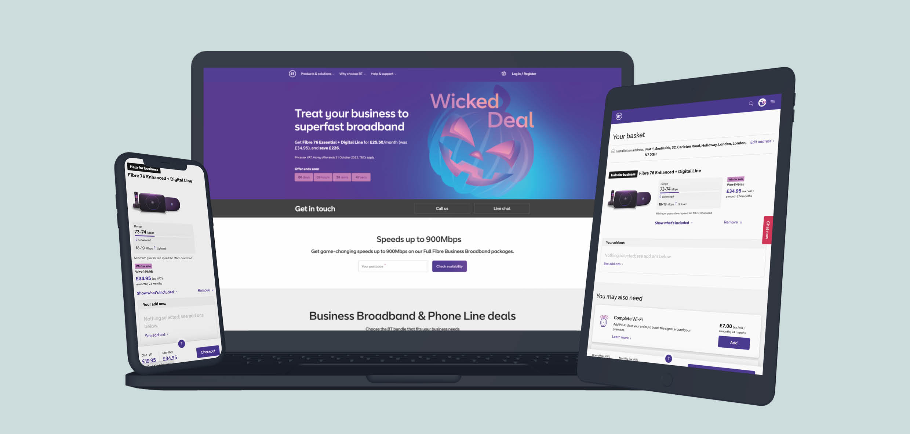
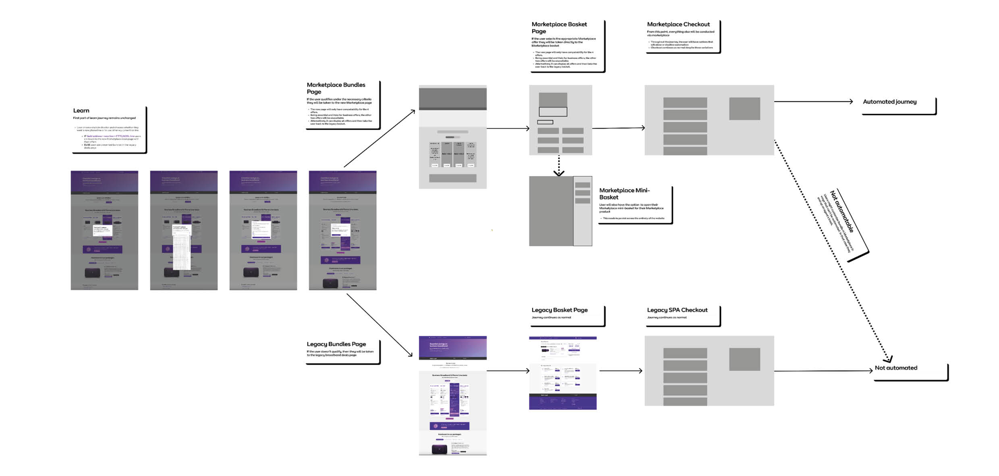
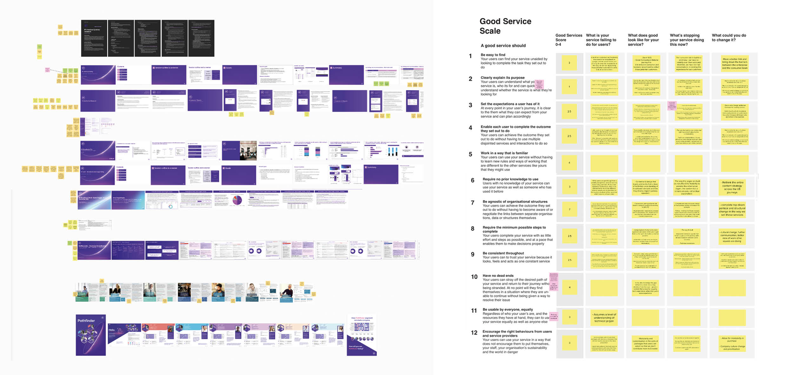
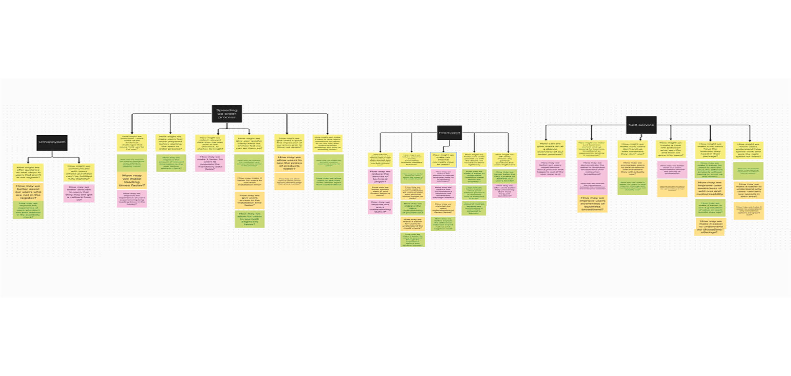
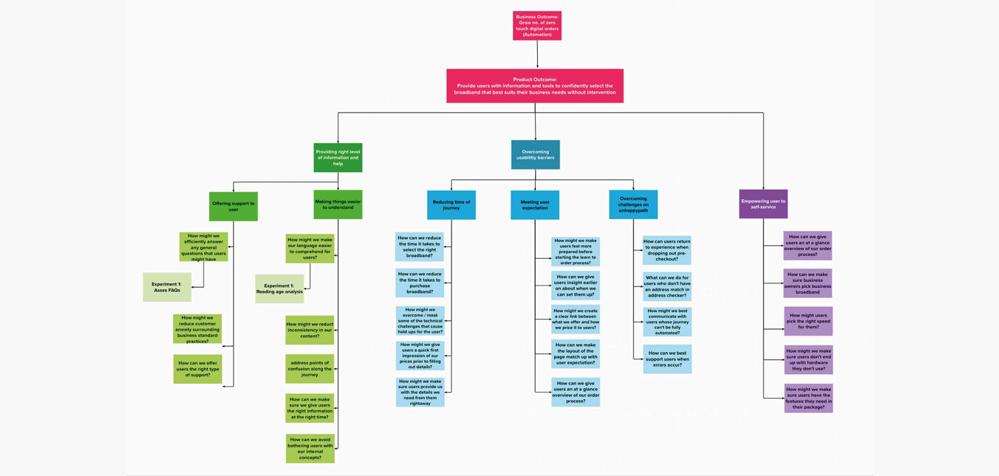

DATE
Nov/Dec 2022
ROLE
UX/UI designer
TOOLKIT
Figma/Mural
All BT business broadband orders are manually processed by an agent. The business wants to increase digital channel share, automate the majority of purchase journeys and move away from being a traditional telco.
My team – of a product designer, content designer and user researcher - was asked to assist a team of engineers with a platform migration and to work with them towards enabling automation, paving the way for digital channel share and a move towards being more than a traditional telco.
To enable platform migration, it was crucial to understand the whole customer journey in the front and back end. This uncovered complexities for migration as well as automation. Based on that research, I created system maps that showcased different approaches the engineers could take and their implications for users.
Once an approach was picked, I started supporting the dev team by finding and clarifying existing designs, aligning them to the new BT design system and conducting tests in the dev environment to make sure everything was working as intended.
During the initial stages of platform migration, it became obvious that the business ask did not consider the user. Existing research findings made clear this is problematic as it known many users pick the wrong product, miss opportunities and drop out early in the journey due to confusion, so we reframed the business outcome:
“Provide users with information and tools to confidently select the broadband that best suits their business needs, without intervention.”
We split the 55 paint points into three categories: facts backed up by research, assumptions validated via expert opinion and assumptions that require more research.
We split the 55 paint points into three categories: facts backed up by research, assumptions validated via expert opinion and assumptions that require more research.
Next, we converted the pain points into opportunities, using 'how might we' statements and did a cardsort exercise to find underlying themes and trends.
We used this breakdown to create an opportunities solutions tree (OST), a term coined by Theresa Torres. It is a visual aid that organises opportunities, solutions and experiments to clearly demonstrate how they contribute to the product/business outcome.
We zoomed in on each opportunity ‘leaf’ on the OST and came up with hypotheses to achieve them. Once written, we indicated what part of the journey each hypothesis referred to before mapping them on an impact/ feasibility matrix. Based on this, we were able to distinguish two types of work: quick fixes (symptom treating on the existing journey) and reimagination (foundational changes).
Guided by the opportunities solutions tree, we set out to tackle our first quick fixes. In addition to that, we started working on longer term improvements that would make automation easier to accomplish.